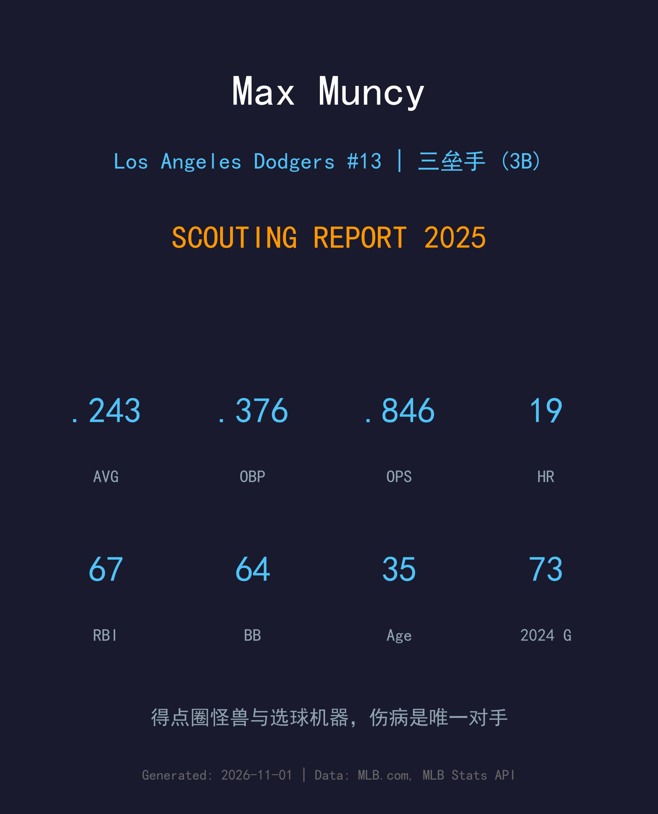
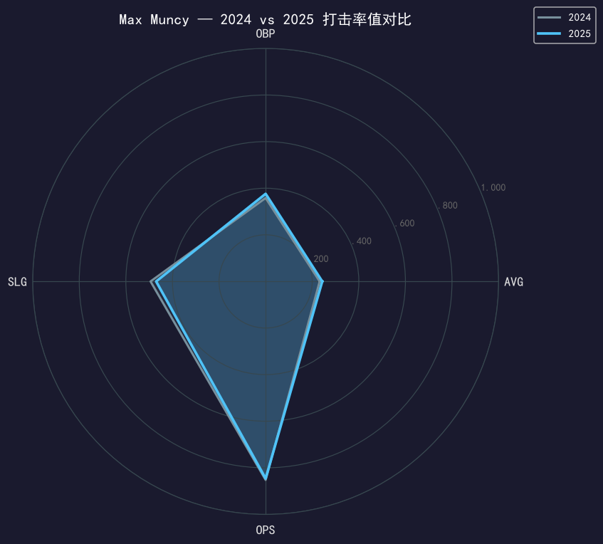
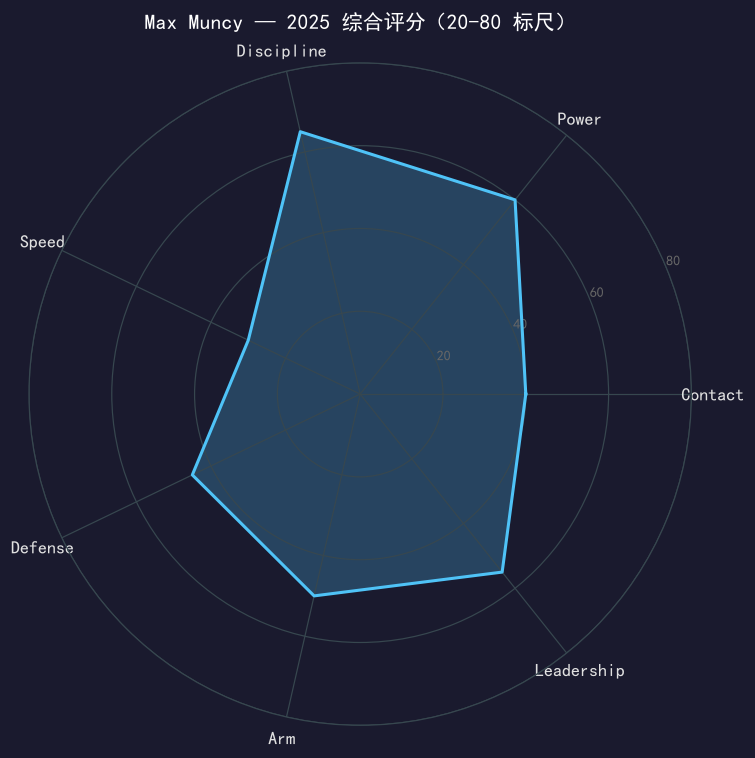

Los Angeles Dodgers #13 | 三垒手 | 左打 | 选球机器 · "Funky Muncy"

Max Muncy 的 2025 年可以用一句话概括：只要他在场上，他就是联盟最好的三垒打者之一——问题是这一年他只有 100 场在场上。
.243 的打击率看起来平平，但配上 .376 的上垒率和 .470 的长打率，OPS .846 与他全盛年（2021-2023 连续三季 .800+）完全持平。他的数据形状独一无二：64 次保送（保送率 16.5%）全队第一，得点圈 OPS 高达 1.151、84 个打席轰出 11 支全垒打——他是道奇打线里最让投手头疼的「得点圈怪兽」。对左投他更是完全体：.923 OPS、16 轰，243 个打席 57 保送 61 三振。
代价是身体：7 月左膝受伤、8 月右侧腹肌拉伤，连续两年被腹肌问题啃掉大量场次。35 岁的 Muncy 依旧精英，但他的可用性已经成为球队每年必须计算的变量。
2017 年 4 月被运动家释出后，道奇用一笔小联盟约把他捡回；2018 年 35 轰、2019 年 35 轰，从联盟边缘人变成道奇打线核心，成为近年棒球界最著名的「second life」故事。
36 轰（平生涯纪录）+ 生涯新高 105 分打点，成为继 Duke Snider 之后道奇队史第二位拥有四个 35+ 全垒打赛季的球员。
2025 年 5 月 31 日对扬基、6 月 22 日对国民，22 天内两场单场双响 + 生涯新高 7 分打点——这是自 1951 年 Ralph Kiner 以来两次 7+ 打点场次间隔最短纪录；他也成为 MLB 史上第 28 位生涯 3 次单场 7+ 打点的球员。
连续两个赛季作为主力三垒手随队夺冠；2024 年 NLCS 还曾创下季后赛连续 12 个打席上垒的纪录。

| 赛季 | G | PA | AVG | OBP | SLG | OPS | HR | RBI | 2B | BB | SO |
|---|---|---|---|---|---|---|---|---|---|---|---|
| 2024 | 73 | 293 | .232 | .358 | .494 | .852 | 15 | 48 | 17 | 45 | 77 |
| 2025 | 100 | 388 | .243 | .376 | .470 | .846 | 19 | 67 | 10 | 64 | 83 |
率值几乎与 2024 完全重叠（OPS 仅差 6 点），但样本更大了——388 个打席、100 场出赛，比 2024 的伤病年多了近三分之一。OBP 与 AVG 之间 133 点的差距是道奇全队最大，再次印证他的核心价值不在击球率而在「每一次挥棒的选择」。二垒打从 17 掉到 10 是长打结构的小变化，但 19 轰与 67 打点换算完整赛季仍是 25 轰 100 打点的产能。
有跑者在得分位置时，Muncy 的数据是怪兽级的 .298/.413/.738、1.151 OPS，84 个打席 11 轰。这个数字不是运气——它来自他极端的选球：得点圈情境下投手必须进垒攻击他，而他等的就是那颗会进垒的球。只要他站上打击区，对手的 run expectancy 就会实质改写。
左打者对左投通常吃亏，Muncy 却反着来：2025 年对左投 .267/.409/.514、.923 OPS，16 轰只花了 243 个打席，57 保送对 61 三振。这让道奇在排兵布阵上拥有极大的灵活性——任何时候他都不需要被保护。
7 月 3 日他在 Kershaw 达成生涯 3000K 的前一个打席伤到左膝；8 月 4 日刚复出就 4-for-5 双响，8 月 13 日又被右侧腹肌拉伤击倒——这是他连续第二年倒在腹肌伤上。两段伤病之间的 8 场比赛他 .348/.531/.870，证明火力完全无恙，问题只在于能否留在场上。35 岁的身体恢复速度，是决定他剩余价值的唯一变量。
两场 7 分打点之夜（间隔仅 22 天，1951 年以来最短）、6 月 3 日对大都会第 9 局追平轰、8 月复出首战的单场双响——他的高光密度依旧。100 场出赛换来 .846 OPS 和 67 打点，效率惊人；但连续两年被腹肌伤病切割赛季，球队已经开始认真思考三垒的保险方案。

得点圈怪兽与选球机器，伤病是唯一的对手
B+ 级 / 主力级三垒重炮
道奇 2025 季后赛之路：外卡轮 2-0 红人 → NLDS 3-1 费城人 → NLCS 4-0 酿酒人 → 世界大赛 4-3 多伦多蓝鸟（二连霸）。
| G | PA | AVG | OBP | SLG | OPS | HR | RBI | BB | SO |
|---|---|---|---|---|---|---|---|---|---|
| 17 | 68 | .214 | .343 | .411 | .754 | 3 | 3 | 11 | 17 |
Max Muncy 的 2024 年 2 月续下的两年合约覆盖到 2026 赛季——这给了他一个清晰的窗口：在合约年向球队（和整个市场）证明 35-36 岁的自己仍值得一份新约。打击技能层面没有衰退迹象，所有问题都指向同一件事：身体能否支撑 130+ 场出赛。道奇大概率会为他配置更严格的分担计划，把弹药留到九月以后。
2026 目标：出赛 120+ 场，得点圈 OPS 保持 1.000+
中期：合约年表现将决定 37 岁后是再续短约还是转型 DH/一垒
长期：道奇队史「second life」叙事的代表人物，更衣室地位无可替代
Max Muncy 出生于德州米德兰，在贝勒大学打出名堂后，2012 年选秀第五轮被奥克兰运动家选中，2015 年 4 月 25 日登上大联盟。但运动家生涯并不顺遂——2017 年 4 月他被球队释出，职业生涯一度看似要滑向小联盟深渊。
道奇给了他一张小联盟合约，剩下的就是历史：2018 年 35 轰、2019 年 35 轰，他从联盟弃将成为道奇打线的核心重炮，「Funky Muncy」的绰号响彻洛杉矶。2021 到 2023 年他连续三个赛季 OPS .800+，2023 年以 105 分打点创生涯新高，并与球队续下两年合约。
值得一提的是，他的同名堂弟 Maxwell Price Muncy（小他 12 岁，同一天生日）也在 2025 年登上大联盟、同样从奥克兰起步——Muncy 家族的两段「second life」，正在平行展开。对 Max 而言，2025 年的第二枚冠军戒指，是对这条从谷底爬回巅峰之路最好的注脚。